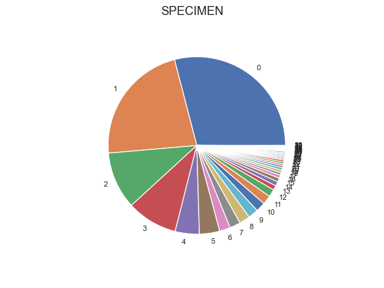

Note
Click here to download the full example code
Describe¶
Out:
Index(['date_received', 'date_outcome', 'patient_id', 'laboratory_number', 'specimen_code', 'specimen_name', 'specimen_description', 'microorganism_code', 'microorganism_name', 'antimicrobial_code', 'antimicrobial_name', 'sensitivity_method', 'sensitivity', 'mic', 'reported'], dtype='object')
index specimen_code specimen_name
0 URICUL 0.2905 Urine Culture
1 WOUCUL 0.2234 Wound Culture
2 BLDCUL 0.1042 Blood Culture
3 SPTCUL 0.0926 Sputum Culture
4 XINCUL 0.0440 Misc Cross Infection Screen
5 URNCUL 0.0370 Urine Micro
6 MRSCUL 0.0197 MRSA Screen
7 T&FCUL 0.0197 NaN
8 TIPCUL 0.0197 Tips and Devices Culture
9 EYECUL 0.0185 Eye Culture
10 ENTCUL 0.0174 NaN
11 VAGCUL 0.0162 High Vaginal Culture
12 NEOCUL 0.0139 Neonatal Screen
13 TISCUL 0.0081 Tissue/Biopsy Culture (Non-TB)
14 9TIPCS 0.0081 TIPS AND DEVICES MCS
15 MNGCUL 0.0069 MRSA Nose and Groin Screen
16 BFLCUL 0.0058 Body Fluid Culture
17 9MRSN 0.0046 NaN
18 GNGCUL 0.0046 GC Culture
19 LVSCUL 0.0046 Low Vaginal Culture
20 9THRCS 0.0035 NaN
21 ETTCUL 0.0035 Endotracheal Aspirate Culture
22 CSFCUL 0.0035 NaN
23 9EARCS 0.0035 NaN
24 9MRSG 0.0023 mrsa groin mcs
25 CROCUL 0.0023 Carbapenem Res Orgs Screen
26 9BWCS 0.0023 bronchial washings mcs
27 DRFCUL 0.0023 Drain Fluid Culture
28 9ETTCS 0.0023 endotracheal tube mcs
29 PSWCUL 0.0023 Pus Swab Culture
30 PUSCUL 0.0023 Pus Aspirate Culture
31 FAECUL 0.0012 NaN
32 SKNCUL 0.0012 Skin Culture
33 BALCUL 0.0012 Bronchoalveolar Lavage Culture
34 PDFCUL 0.0012 PDF Culture
35 SEMCUL 0.0012 NaN
36 EARCUL 0.0012 Ear Culture
37 9DERCS 0.0012 Skin culture, MCS
38 9PENCS 0.0012 NaN
39 9PUSCS 0.0012 NaN
Total cultures: 864
Specimens (proportions)
index specimen_code specimen_name
0 URICUL 0.2905 Urine Culture
1 WOUCUL 0.2234 Wound Culture
2 BLDCUL 0.1042 Blood Culture
3 SPTCUL 0.0926 Sputum Culture
4 XINCUL 0.0440 Misc Cross Infection Screen
5 URNCUL 0.0370 Urine Micro
6 MRSCUL 0.0197 MRSA Screen
7 T&FCUL 0.0197 NaN
8 TIPCUL 0.0197 Tips and Devices Culture
9 EYECUL 0.0185 Eye Culture
10 ENTCUL 0.0174 NaN
11 VAGCUL 0.0162 High Vaginal Culture
12 NEOCUL 0.0139 Neonatal Screen
13 TISCUL 0.0081 Tissue/Biopsy Culture (Non-TB)
14 9TIPCS 0.0081 TIPS AND DEVICES MCS
15 MNGCUL 0.0069 MRSA Nose and Groin Screen
16 BFLCUL 0.0058 Body Fluid Culture
17 9MRSN 0.0046 NaN
18 GNGCUL 0.0046 GC Culture
19 LVSCUL 0.0046 Low Vaginal Culture
20 9THRCS 0.0035 NaN
21 ETTCUL 0.0035 Endotracheal Aspirate Culture
22 CSFCUL 0.0035 NaN
23 9EARCS 0.0035 NaN
24 9MRSG 0.0023 mrsa groin mcs
25 CROCUL 0.0023 Carbapenem Res Orgs Screen
26 9BWCS 0.0023 bronchial washings mcs
27 DRFCUL 0.0023 Drain Fluid Culture
28 9ETTCS 0.0023 endotracheal tube mcs
29 PSWCUL 0.0023 Pus Swab Culture
30 PUSCUL 0.0023 Pus Aspirate Culture
31 FAECUL 0.0012 NaN
32 SKNCUL 0.0012 Skin Culture
33 BALCUL 0.0012 Bronchoalveolar Lavage Culture
34 PDFCUL 0.0012 PDF Culture
35 SEMCUL 0.0012 NaN
36 EARCUL 0.0012 Ear Culture
37 9DERCS 0.0012 Skin culture, MCS
38 9PENCS 0.0012 NaN
39 9PUSCS 0.0012 NaN
Microorganisms (proportions)
SAUR 0.2648
ECOL 0.1898
CNS 0.0820
KPNE 0.0614
PAER 0.0527
...
GHAEM 0.0003
CAMPY 0.0003
A_ISOLATED 0.0002
PANA 0.0001
A_MANAEROBE 0.0001
Name: microorganism_code, Length: 63, dtype: float64
Antimicrobials (proportions)
ACIP 0.0750
AGEN 0.0712
ATRI 0.0633
AAUG 0.0444
ATET 0.0395
...
ACLZ 0.0001
AFLUZ 0.0001
APCZ 0.0001
ADAP 0.0001
AITR 0.0001
Name: antimicrobial_code, Length: 67, dtype: float64
Pairs (proportions
microorganism_code antimicrobial_code
SAUR AMET 0.0224
ACLI 0.0212
APEN 0.0212
AERY 0.0212
AFUS 0.0212
...
EFAS ACHL 0.0001
ECLO AFOS 0.0001
ACZA 0.0001
EAER AESBL 0.0001
VIRST ATET 0.0001
Length: 853, dtype: float64
Freqs:
SENSITIVITY highly resistant intermediate not done resistant sensitive
SPECIE ANTIBIOTIC
ABAU AAMI 0.0 0.0 0.0 4.0 7.0
AAMO 0.0 0.0 0.0 7.0 0.0
AAMPC 0.0 0.0 0.0 1.0 0.0
AAUG 0.0 0.0 0.0 5.0 2.0
AAZT 0.0 0.0 0.0 2.0 0.0
... ... ... ... ... ...
VIRST ACLI 0.0 0.0 0.0 0.0 1.0
AERY 0.0 0.0 0.0 1.0 0.0
AMLS 0.0 0.0 0.0 1.0 0.0
APEN 0.0 0.0 0.0 0.0 1.0
ATET 0.0 0.0 0.0 0.0 1.0
[853 rows x 5 columns]
Count
SPECIE ANTIBIOTIC
SAUR AMET 224.0
ACLI 212.0
APEN 212.0
AERY 212.0
AFUS 212.0
...
EFAS ACHL 1.0
ECLO AFOS 1.0
ACZA 1.0
EAER AESBL 1.0
VIRST ATET 1.0
Length: 853, dtype: float64
8 9 10 11 12 13 14 15 16 17 18 19 20 21 22 23 24 25 26 27 28 29 30 31 32 33 34 35 36 37 38 39 40 41 42 43 44 45 46 47 48 49 50 51 52 53 54 55 56 57 58 59 60 61 62 63 64 65 66 67 68 69 70 71 72 73 74 75 76 77 78 79 80 81 82 83 84 85 86 87 88 89 90 91 92 93 94 95 96 97 98 99 100 101 102 103 104 105 106 107 108 109 110 111 112 113 114 115 116 117 118 119 120 121 122 123 124 125 126 127 128 129 130 131 132 133 134 135 136 137 138 139 140 141 | # Import libraries
import sys
import glob
import numpy as np
import pandas as pd
import seaborn as sns
import matplotlib as mpl
import matplotlib.pyplot as plt
# Import pyamr
from pyamr.core.freq import Frequency
from pyamr.datasets.load import load_data_nhs
from pyamr.utils.plot import create_mapper
# Configure seaborn style (context=talk)
sns.set(style="white")
# Set matplotlib
mpl.rcParams['xtick.labelsize'] = 9
mpl.rcParams['ytick.labelsize'] = 9
mpl.rcParams['axes.titlesize'] = 11
mpl.rcParams['legend.fontsize'] = 9
# Pandas configuration
pd.set_option('display.max_colwidth', 40)
pd.set_option('display.width', 300)
pd.set_option('display.precision', 4)
# Numpy configuration
np.set_printoptions(precision=2)
# -------------------------
# Constants
# -------------------------
# Replace codes
replace_codes = {
#'9MRSN': 'MRSCUL',
#'URINE CULTURE': 'URICUL',
#'WOUND CULTURE': 'WOUCUL',
#'BLOOD CULTURE': 'BLDCUL',
#'SPUTUM CULTURE': 'SPTCUL',
##'CSF CULTURE': 'CSFCUL',
#'EYE CULTURE': 'EYECUL',
#'GENITALCUL': 'GENCUL',
#'NEONATAL SCREEN': 'NEOCUL',
}
# ----------------------------------------------------------
# Main
# ----------------------------------------------------------
# Load data
data, antibiotics, organisms = load_data_nhs(nrows=1000)
print(data.columns)
# Replace
data.specimen_code = \
data.specimen_code.replace(replace_codes)
# Drop duplicates
data = data.drop_duplicates()
# The total number of cultures
ncultures = data.laboratory_number.nunique()
# The percentage of each specimen
pspecimens = data \
.groupby('laboratory_number').head(1) \
.specimen_code.value_counts(normalize=True) \
.to_frame().reset_index()
mapper = create_mapper(data, 'specimen_code', 'specimen_name')
pspecimens['specimen_name'] = pspecimens['index'].map(mapper)
print(pspecimens)
# The percentages of each organism
pmicroorganisms = data \
.microorganism_code \
.value_counts(normalize=True)
# The percentages of each antimicrobial
pantimicrobials = data \
.antimicrobial_code \
.value_counts(normalize=True)
# The percentages of (orgnaism, antimicrobial) pairs
ppairs = data[['microorganism_code', 'antimicrobial_code']]
ppairs = ppairs.value_counts(normalize=True)
# Show
print("\nTotal cultures: %s" % ncultures)
print("\nSpecimens (proportions)")
print(pspecimens.to_string())
print("\nMicroorganisms (proportions)")
print(pmicroorganisms)
print("\nAntimicrobials (proportions)")
print(pantimicrobials)
print("\nPairs (proportions")
print(ppairs)
# --------------------
# Compute Frequencies
# --------------------
# Create instance
freq = Frequency(column_antibiotic='antimicrobial_code',
column_organism='microorganism_code',
column_date='date_received',
column_outcome='sensitivity')
# Compute frequencies overall
freq_pairs = freq.compute(data, strategy='overall',
by_category='pairs')
freq_orgs = freq.compute(data, strategy='overall',
by_category='organisms')
freq_abxs = freq.compute(data, strategy='overall',
by_category='organisms')
print("\n\nFreqs:")
print(freq_pairs)
print("Count")
print(freq_pairs.sum(axis=1).sort_values(ascending=False))
pspecimens.specimen_code.plot(kind='pie', ylabel='')
plt.suptitle('SPECIMEN')
plt.show()
|
Total running time of the script: ( 0 minutes 0.263 seconds)